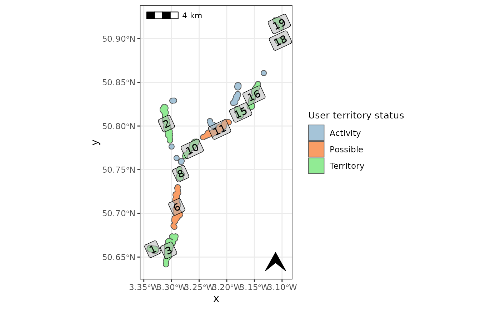

Built in plotting function to check user-corrected territory class assignment.
check_user_terr.RdFunction to plot the user-corrected territory classes from: beavertools::user_classify()
Usage
check_user_terr(
terr_poly,
fill_col = c("#7EAAC7", "#F87223", "#61E265"),
label = TRUE,
basemap = FALSE,
basemap_type = "osmgrayscale",
axes_units = TRUE,
scalebar = TRUE,
scalebar_loc = "tl",
north_arrow = TRUE,
north_arrow_loc = "br",
north_arrow_size = 0.75,
wgs = TRUE,
guide = TRUE,
plot_extent
)Arguments
- terr_poly
a territory polygon created using
beavertools::estimate_territories()- fill_col
character vector of R colours or HEX codes.
- label
label activity areas with polygon ID. important when checking the predicted classification
- basemap
Boolean, include an OSM basemap. (optional)
- basemap_type
Character vector for osm map type. for options see
rosm::osm.types()- axes_units
Boolean to include coordinate values on axis.
- scalebar
Boolean to include a scalebar.
- scalebar_loc
character vector for the scalebar location one of:'tl', 'bl', 'tr', 'br' Meaning "top left" etc.
- north_arrow
Boolean to include a north arrow
- north_arrow_loc
character vector for the arrow location one of:'tl', 'bl', 'tr', 'br' Meaning "top left" etc.
- north_arrow_size
numeric vector for the arrow
- wgs
Boolean to transform coordinate reference system (CRS) to WGS84 (EPSG:4326)
- guide
Boolean to include a legend
- plot_extent
'bbox', 'sf' or 'sp' object defining the desired plot extent.
Examples
# Here we filter the filter the built in 2019-2020 ROBT feeding sign data `RivOtter_FeedSigns`
# Then pipe this 'sf' object to forage_density.
ROBT_201920 <- RivOtter_FeedSigns %>%
dplyr::filter(SurveySeason == "2019 - 2020")%>%
forage_density(., 'FeedCat')
#> No value supplied for "kd_extent" argument: default extent will be used
#> Warning: CRS object has comment, which is lost in output; in tests, see
#> https://cran.r-project.org/web/packages/sp/vignettes/CRS_warnings.html
#>
#> calculating weighted kde
#> Warning: CRS object has comment, which is lost in output; in tests, see
#> https://cran.r-project.org/web/packages/sp/vignettes/CRS_warnings.html
# Now we load the ROBT `RivOtter_OtherSigns` dataset and filter to the same
# year as the forage density raster.
CS_201920 <- RivOtter_OtherSigns %>%
dplyr::filter(SurveySeason == "2019 - 2020")
# run territory classification
otter_poly <- estimate_territories(ROBT_201920, confirm_signs = CS_201920)
# create the map for checking automated territory classification
otter_poly_uc <- user_classify(otter_poly, territory = c(10, 28))
# generate the user territory check plot.
check_user_terr(otter_poly_uc, basemap=FALSE)
#> Warning: st_point_on_surface may not give correct results for longitude/latitude data
